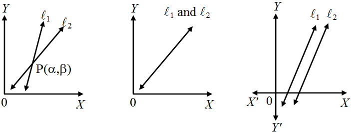
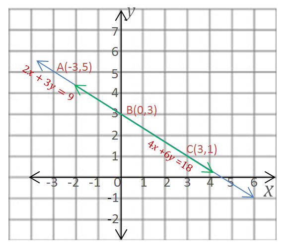

Graphical Method
for solving pair of linear equation using this method is a unique method in which we need to draw the line
of both the linear equation and the point where both lines intersect each other , that point( co-ordinate ) are
the solution of the both equation
l1 = a1x + b1y + c1 = 0
l2 = a2x + b2y + c2 = 0
Three posibilities that can be happen -
1. Two lines will intersect at a point
2. Two lines will coincident .
3. Two lines will parallel to each other .

According to the figure , There are three types of solution -
1. Unique solution
2. Infinite many solution .
3. No solution .
Consistent solution - if a system of simultaneous linear equation have atleast one solution are known
as consistent solution .
Inonsistent solution - if a system of simultaneous linear equation have no solution are known as as
Inconsistent solution .
Unique Solution - if the graph of both the equation intersect at a point .
4x - 6y = -4
2x + 3y = 6
solution of both equation are at a point ( 1 , 1.33 ) .

Infinite many Solution - if the graph of both the equation intersect at every point i.e. graph coincide each other .
2x + 3y = 9
4x + 6y = 18
solution of both equation are at every point of the line .

No Solution - if the graph of both the equation doesn't intersect at all means both graph are parallel to each other .
3x + 3y = 15
2x + 2y = 6
there is no solution of these equation .